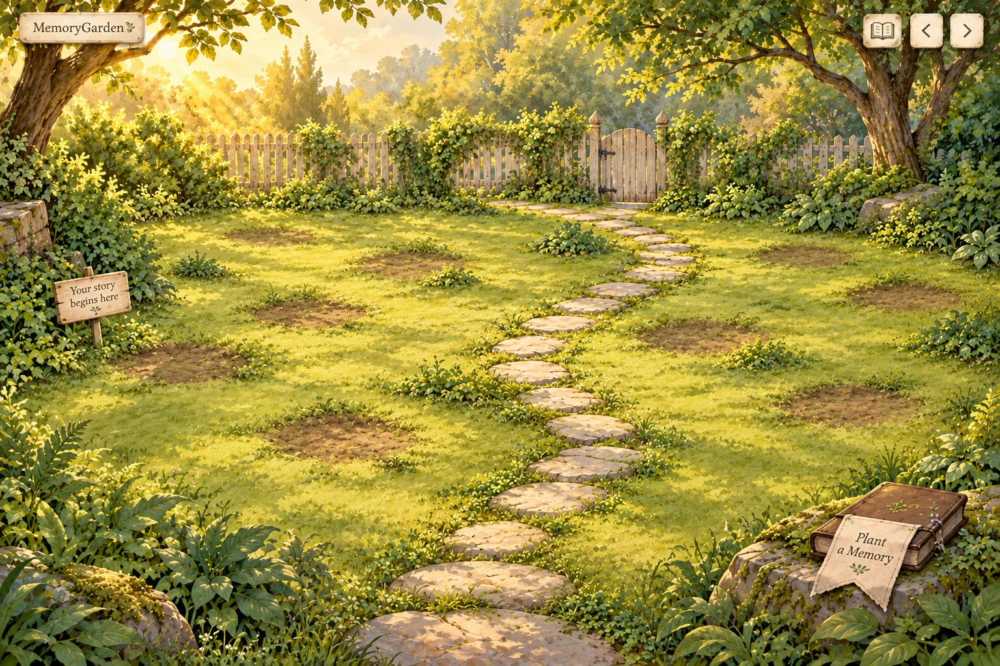
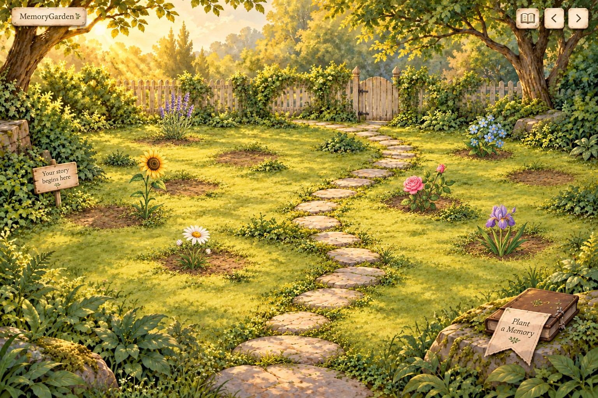
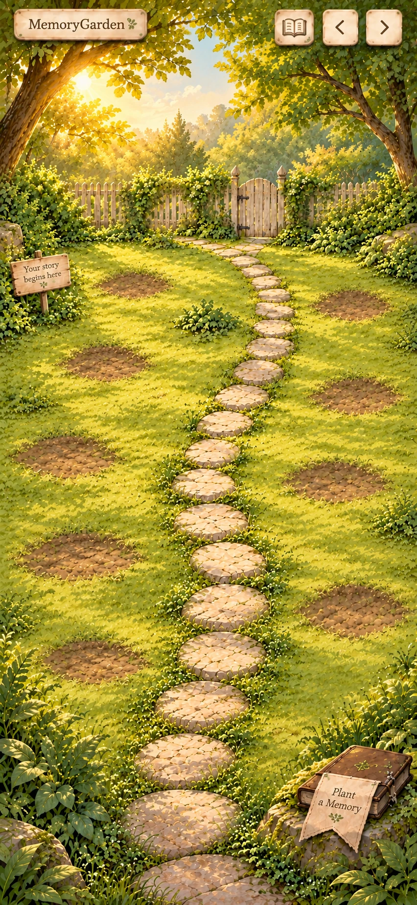
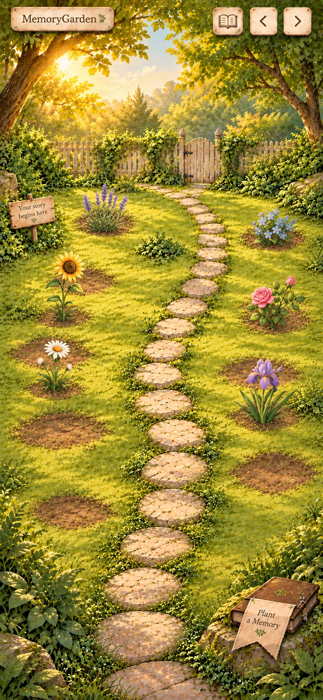

Desktop · the same glade before and after planting
Quiet green planting areas replace the crowded floral backdrop. Shallow irregular soil marks suggest places to plant, while the fence, trees and flush stepping-stone path retain the storybook setting.
Empty garden


Partially planted garden


Click any image for its original PNG. These are full composition studies; they are not flattened backgrounds intended for the application.
Mobile · a portrait composition with more usable ground
The fence line is raised and the canopy vista shortened, giving the planting areas more space. The path, edge foliage and lower-right book stay part of the same glade.
Empty garden


Partially planted garden


What this revision changes
| Design concern | A2 treatment |
|---|---|
| Crowded background | Prominent decorative blooms removed; foliage concentrated at the edges and quieter space kept around planting locations. |
| Sunflowers already painted into scenery | Empty views have no memory flowers. Only the populated studies add the six recognizable user-planted types. |
| Terraces and circular holes | One level ground plane with irregular shallow earth scuffs, without stone rims or retaining walls. |
| Mismatched flower artwork | All six repainted within the garden's warm watercolor/gouache style, upper-left lighting and whole-plant silhouettes. |
| Growing personal meaning | The empty scene is welcoming; the planted flowers provide its distinctive botanical color and visual interest. |
The foreground book opens the approved botanical journal: two pages on desktop, one readable page on mobile. That interaction remains unchanged; this round refines the garden and flower family. The earlier journal study is preserved in the archive.
One Secret Glade for the MVP
Garden pages repeat this same scene. The arrows represent additional pages of memories, not different garden environments.
Future morning, golden-hour or evening artwork must keep the same registered ground geometry and spot anchors. Memory placement remains independent of lighting through stable page/spot IDs. Desktop and mobile retain their corresponding layouts.
Planning constraint only: no theme selector, additional atmosphere assets or theme implementation is included now.
Review the final composition before more implementation
Please assess the calmness of the planting areas, the six-flower family, the change from empty to planted, and the mobile composition.
Generated edits preserve the general scene but are not pixel-registered geometry proofs; some soil/root details drift. Native dimensions are 1536×1024 desktop and 852×1846 portrait. Exact ten-spot placement, accessible targets, responsive safe areas and motion need a real layout proof after approval. The final scene must use separate flowers, real HTML controls/text, and independent foreground layers.
Direction A is preferred, not yet approved. Application code, production flower assets and Slice 2 remain on hold.
Earlier A/B comparison and journal study
Open the archived first proposal. Direction B's stone terraces are historical alternatives, not the current MVP design.